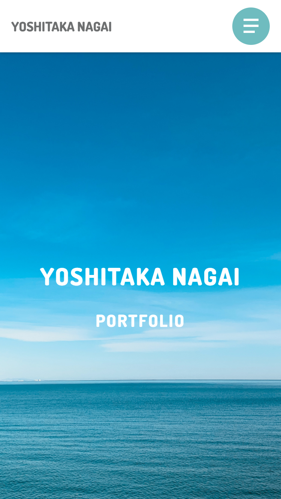
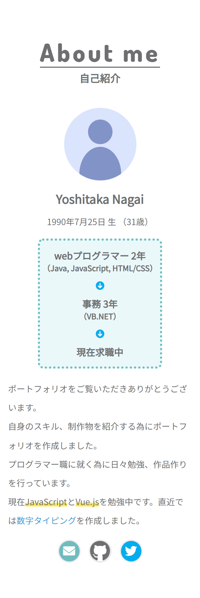
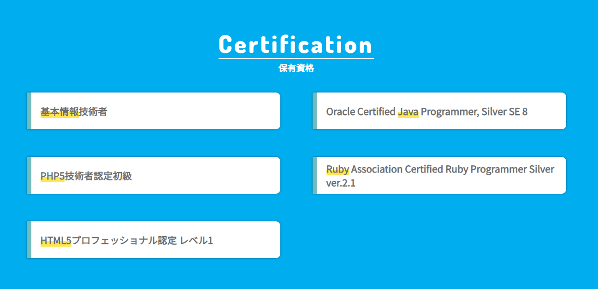
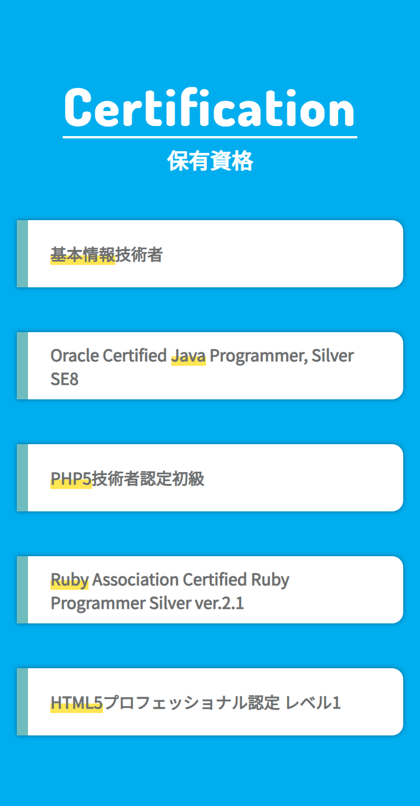
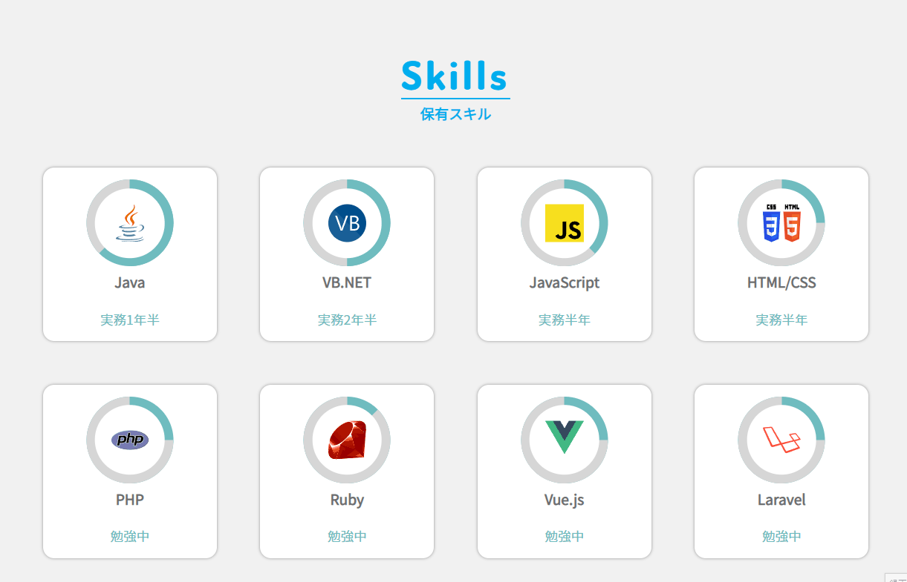
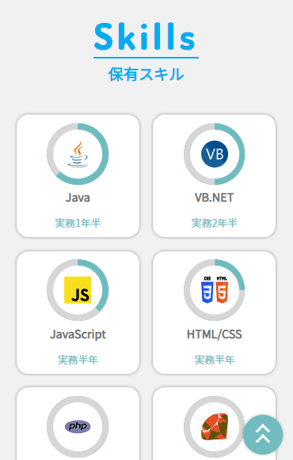
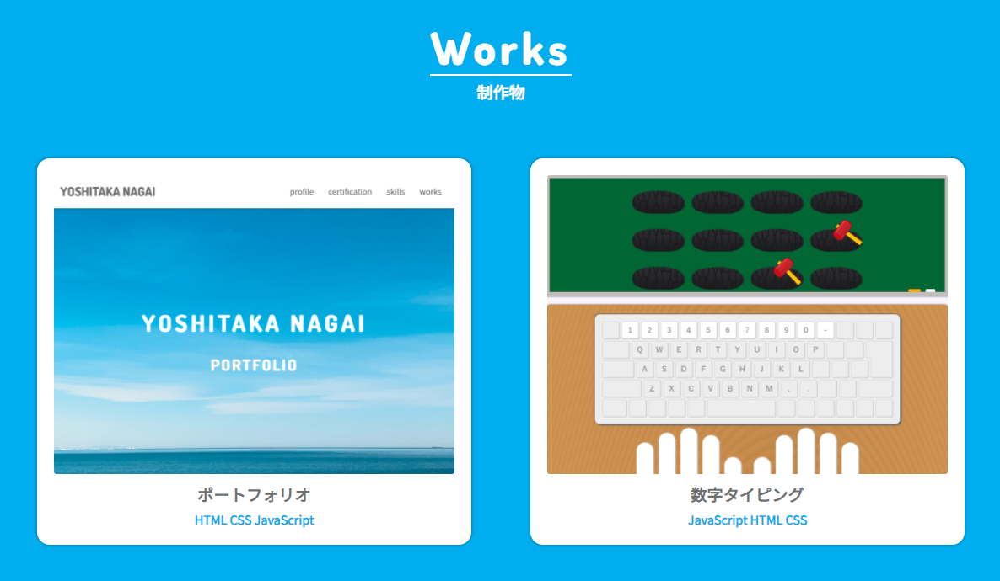
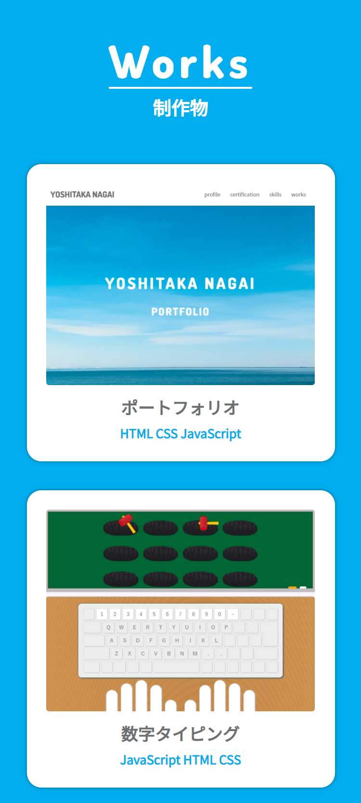
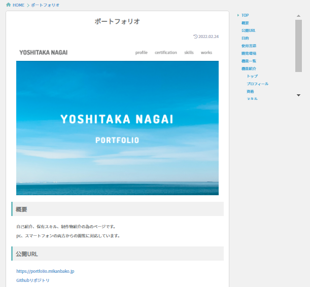
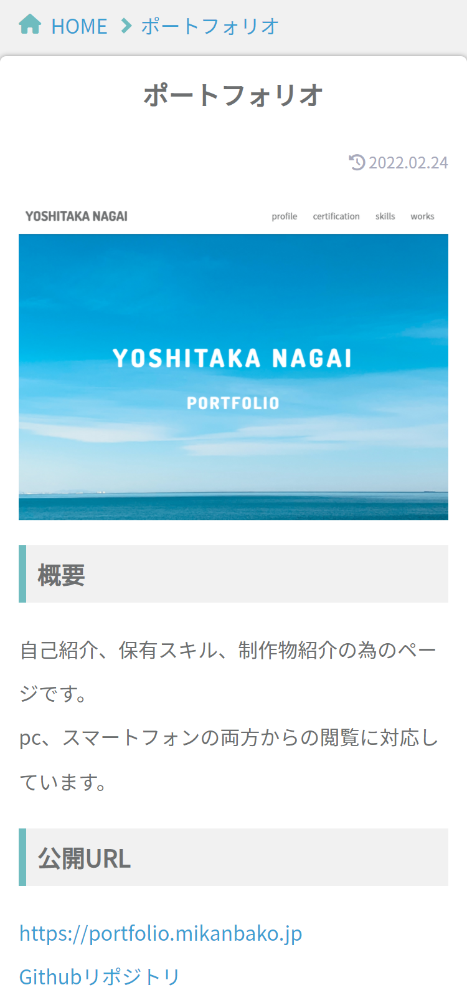

ポートフォリオ
概要
自己紹介、保有スキル、制作物紹介の為のページです。
pc、スマートフォンの両方からの閲覧に対応しています。
公開URL
目的
- スキル、制作物の紹介ページ作成
- HTML、CSSの勉強
- JavaScriptの勉強（jQuery不使用）
- デザインの勉強
使用言語
- HTML
- CSS
- Javascript
開発環境
- Windows10
- Visual Studio Code
- git(SourceTree使用)
Webアイコン、フォント
- フォント
- アイコン
機能一覧
- トップ
- プロフィール
- 資格
- スキル
- 制作物
- 詳細ページ
機能紹介
トップ

トップ画像、ヘッダーが表示されます。ヘッダーは上部に固定で表示しています。
プロフィール


自身の名前、生年月日、経歴等の情報を紹介しています。
資格


取得資格を紹介しています。
スキル


スキルの紹介です。対象をクリックすると詳細のモーダルウィンドウが開かれます。
制作物


制作物を紹介しています。対象をクリックすると詳細ページへ遷移します。
詳細ページ


制作物の詳細を紹介しています。PC表示では画面右側にサイドナビゲーションが表示され、スクロールに連動しています。
各制作物ページにて共通してる紹介項目は以下の通りです。
- 概要
- 公開URL
- 目的
- 使用言語
- 開発環境
- 機能一覧
- 機能紹介
- 作り終えて
- 参考サイト
作り終えて
- 紹介する制作物のクオリティを向上させたい。
- jQueryを使用せず、素のJavaScriptのみで動作の処理を作成することができて良かった。
- より見やすいデザイン、適切なアニメーション設定を心掛けたい。
- 今後、ポートフォリオサイトを更新、管理しやすいようにWordPress化したい。